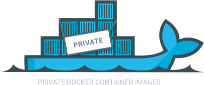

tmux使用技巧 tmux shortcuts & cheatsheet quoted from: https://github.com/der-flo/tmux_cheatsheet. & great thanks. tmux cheatsheet Based on tmux: Productive Mouse-Free Development (The Pragmatic Progammers - Brian P. Hogan). Shell command Description tmux new-session -s sessionname tmux new -s sessionname Create a named session called sessionname tmux new -s sessionname -d top Create detached session and run top inside tmux new -s sessionname -n win Create session sessionname with window win tmux list-sessions tmux ls tmux attach tmux attach -t sessionname Attach to session with name sessionname tmux kill-session -t sessionname tmux has-session -t sessionname Returns 0 if session exists PREFIX (CTRL-b) + … Description Custom mapping d Detach : Enter command mode ?
how to create a docker registry

如何创建一个私有的Docker Registry？ Docker是一个这两年流行起来的容器化构建、部署和应用运行的开发工具，它不仅能帮助开发者快速搭建开发环境，快速进行测试，也能帮助企业进行更快速的更方便的发布和部署产品。
0. 目录 什么是Docker？ Docker可以拿来做什么？ 怎么提交一个Docker镜像？ 什么是Docker Registry？ 怎么创建一个私有的Registry？
1. 什么是Docker？↩ Docker is an open platform to build, ship and run distributed applications anywhere.
这是Docker官方给出的对Docker的定义性解释。Docker是一个在任何环境中构建、分发以及运行分布式应用的开放平台。
1）与VMWare、VirtualBox、KVM等虚拟化平台相比，运行在Docker容器中各个实例使用同一套底层操作系统内核，而不是为每一个实例设置一套操作系统，所以Docker有着轻量化的特点。
2）Docker平台可以支持大多数linux发行版系统以及Windows系统（最近也开始支持Mac OS系统，之前是通过代理实现），其开放性使运行在Docker平台上的应用可以非常方便地移植到各种平台，
3）同时运行在各容器中的的应用之间又有着很强的隔离性，在这种层面上保证了各应用以及底层系统本身的安全性。
2. Docker可以拿来做什么？↩ Docker镜像化(?)和容器化(?)极大地方便了应用的发布、部署和移植。
开发者快速验证
应用微服务架构部署
分布式应用伸缩部署
3. 怎么提交一个Docker镜像？↩ 镜像可以是由本地build构建(?)出来的，也可以是由公共的或者私有的Docker镜像仓库下载来的。我们可以对下载到本地的Docker镜像进行修改编辑并提交为新的镜像。下面以下载Ubuntu官方镜像并提交到Docker Hub个人仓库为例，来说明镜像提交的过程。
第一步，下载（拉取）官方Ubuntu镜像，
docker pull ubuntu 第二步，给上步骤中下载的ubuntu镜像添加tag(?)，生成“新的镜像”，（仔细看FS layer就会发现，其实与上步镜像是同一个镜像），
docker tag ubuntu <your docker hub account>/ubuntu 第三步，将上步中的新镜像提交到Docker Hub。